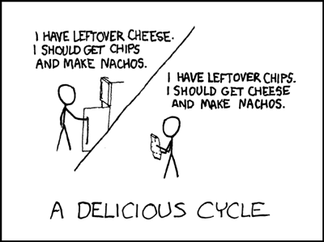

Code Chameleons' Journal
Freelancing Week One
02/28/2014 The first week of class was really about getting to know each other and learning where this class would take us. We were set up with some basic tools that we will be using on all our future projects. We were introduced to version control and git, and we set up a local webserver on our laptops. We got our first real world example of front end freelancing from Nim, which soared over my head, but gave me hope that by the end of 16 weeks I will understand parallax scrolling. Nuts.
The first week of class was really about getting to know each other and learning where this class would take us. We were set up with some basic tools that we will be using on all our future projects. We were introduced to version control and git, and we set up a local webserver on our laptops. We got our first real world example of front end freelancing from Nim, which soared over my head, but gave me hope that by the end of 16 weeks I will understand parallax scrolling. Nuts.
I have come into this class behind most in technical skills, but I feel I am in good hands with our teachers. They take the time to summarize information and work with us one on one. They are very invested in our success and won’t let anyone fail. I feel very taken care of, and my mind is buzzing with new information.
- Teamwork and Version Control.
- Project Workflow.
- The importance of soft skills.
- Kitchen metaphor for web servers.
- How to present ideas to a group.
Freelancing Week Two
03/07/2014Most people can easily answer a question like what’s your favorite movie or what’s the best book you’ve ever read? But what about best email ever received? I’ve never really thought about this question until the day I read an email from Cris Kelly asking me if I would be interested in joining a new class named Front-end Freelancing.
The class is filled with such an eclectic group of artistic, motivated and bright individuals who are contagious to be around.
The second week is now coming to an end and I feel like I now have a decent foundation to start off our first code challenge. The top 5 concepts that I learned from week 2 are:
- HTML File Structure
- Markup vs Markdown
- CSS Hierarchy
- Sublime Text Shortcuts
- Nim’s Work Flow Tips
Let’s get bananas, it’s code monkey time!!!!